Тип Условие Ответ B8 40129. На рисунке изображен график функции
y=f(x) . Прямая, проходящая через начало координат, касается графика этой функции в точке с абсциссой 8. Найдите
f' (8).
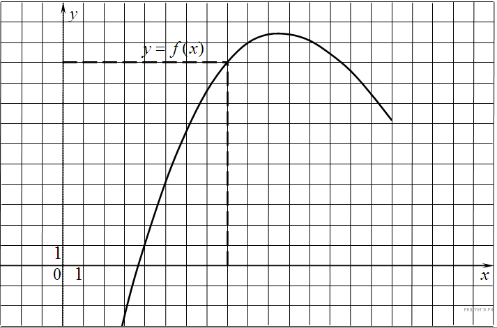
Тип Условие Ответ B8 317541. На рисунке изображён график 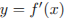 производной функции и восемь точек на оси абсцисс: 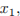
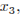
, 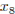. В скольких из этих точек функция возрастает?
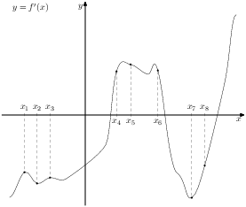
Тип Условие Ответ B8 27499. На рисунке изображен график производной функции
f(x) , определенной на интервале (−11; 3). Найдите промежутки возрастания функции
f(x) . В ответе укажите длину наибольшего из них.
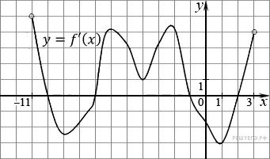
Тип Условие Ответ B8 27496. На рисунке изображен график производной функции
f(x) , определенной на интервале (−11; 11). Найдите количество точек экстремума функции
f(x) на отрезке [−10; 10].
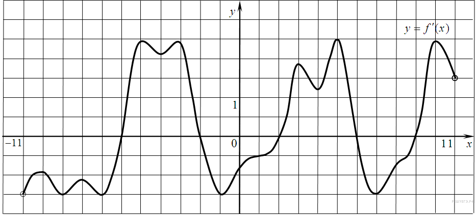
Тип Условие Ответ B8 323077. На рисунке изображён график функции
y =
F (
x ) — одной из первообразных некоторой функции
f (
x ), определённой на интервале (−3;5). Пользуясь рисунком, определите количество решений уравнения
f (
x )=0 на отрезке [−2;4].
Тип Условие Ответ B8 317540. На рисунке изображён график функции и двенадцать точек на оси абсцисс: 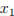, 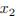, 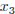,
, 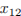. В скольких из этих точек производная функции отрицательна?
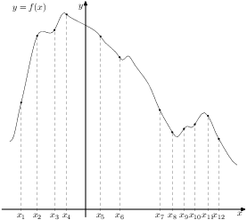
Тип Условие Ответ B8 27497. На рисунке изображен график производной функции
f(x) , определенной на интервале (−7; 4). Найдите промежутки возрастания функции
f(x) . В ответе укажите сумму целых точек, входящих в эти промежутки.
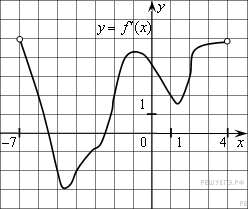
Тип Условие Ответ B8 27494. На рисунке изображен график производной функции
f(x) , определенной на интервале (−7; 14). Найдите количество точек максимума функции
f(x) на отрезке [−6; 9].
Тип Условие Ответ B8 119974. Прямая является касательной к графику функции
. Найдите
.
Тип Условие Ответ B8 27490. На рисунке изображен график функции
y=f(x) , определенной на интервале (−2; 12). Найдите сумму точек экстремума функции
f(x) .
Тип Условие Ответ B8 317539. На рисунке изображён график функции и восемь точек на оси абсцисс: , , ,
, . В скольких из этих точек производная функции положительна?
Тип Условие Ответ B8 317542. На рисунке изображён график производной функции и восемь точек на оси абсцисс:
,. В скольких из этих точек функция убывает?
Тип Условие Ответ B8 27491. На рисунке изображен график производной функции , определенной на интервале
. В какой точке отрезка функция принимает наибольшее значение?